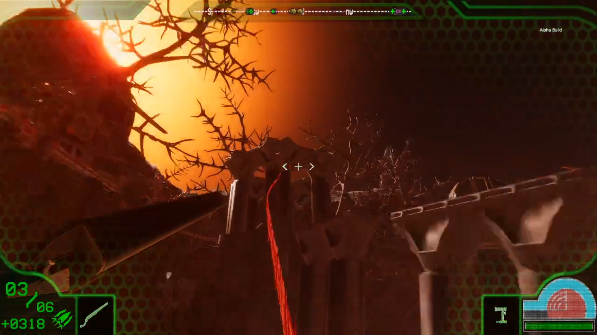

Project Lead:
Organized a weekly milestone contract and delegated work based on established task priorities. Employed the Agile methodology to our development cycle. Held daily scrum meetings and weekly sprint planning and review meetings. Curated and documented game progress using game design, technical design and module documentation. Kept track of team progress using Assembla's ticket system.
Player Controller Programmer:
Developed all of the movement logic and custom physics related to the main character.

Grapple Hook Programmer:
Developed the player behaviour when using the grapple hook.
Thermal Vision Programmer:
Designed and developed a darkness volume that will reduce the level lighting entirely upon entering. Programmed a custom shader using unity's shader graph for the termal material that is applied to meshes while using thermal vision. Developed all logic and behaviour while using the thermal vision tool.
Equipment Wheel Programmer:
Designed and developed the functionality of the equipment wheels which allow you to cycle through equipment inventory.

Equipment Belt Programmer
Designed and developed the inventory system. This is where tools and weapons are stored and how they are accessed after they have been collected.